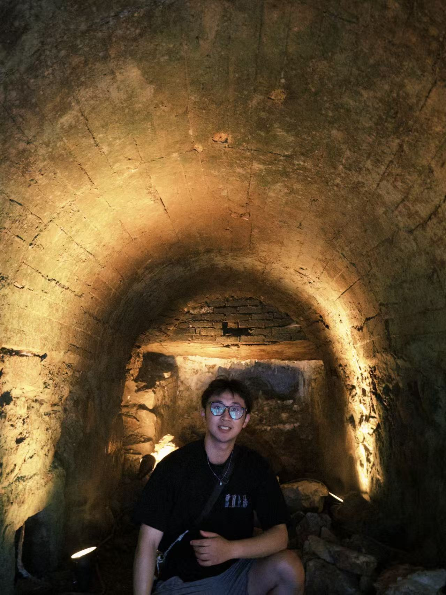

You Lu
About Me
I am a PhD student in the School of Computer Science and Technology at Fudan University, advised by Prof. Bihuan Chen and Prof. Xin Peng. I received my bachelor's degree in software engineering from Soochow University in 2022.
Research Interests
- AI system engineering: reliable execution, tool use, memory, runtime monitoring, and safety assurance for LLM-based agents.
- Autonomous driving simulation testing: scenario generation, dynamic traffic participant modeling, violation diagnosis, and runtime safety monitoring.
Selected Publications
-
 TOSEM
ACM Transactions on Software Engineering and Methodology (TOSEM), 2026.
TOSEM
ACM Transactions on Software Engineering and Methodology (TOSEM), 2026. -
 TOSEM
ACM Transactions on Software Engineering and Methodology (TOSEM), 2026.
TOSEM
ACM Transactions on Software Engineering and Methodology (TOSEM), 2026. -
 AAAI
Proceedings of the AAAI Conference on Artificial Intelligence (AAAI), 2026.
AAAI
Proceedings of the AAAI Conference on Artificial Intelligence (AAAI), 2026. -
 ISSTA
International Symposium on Software Testing and Analysis (ISSTA), 2026.
ISSTA
International Symposium on Software Testing and Analysis (ISSTA), 2026. -
 FSE
International Conference on the Foundations of Software Engineering (FSE), 2026.
FSE
International Conference on the Foundations of Software Engineering (FSE), 2026. -
 ASE
International Conference on Automated Software Engineering (ASE), 2025.
ASE
International Conference on Automated Software Engineering (ASE), 2025. -
 ASE
International Conference on Automated Software Engineering (ASE), 2025.
ASE
International Conference on Automated Software Engineering (ASE), 2025. -
 FSE
International Conference on the Foundations of Software Engineering (FSE), 2025.
FSE
International Conference on the Foundations of Software Engineering (FSE), 2025. -
ISSTA
International Symposium on Software Testing and Analysis (ISSTA), 2025.
-
ISSTA
International Symposium on Software Testing and Analysis (ISSTA), 2024.
Awards
- 2024 - Second Prize, Prototype Competition in ChinaSoft'24
- 2023 - Third Prize, Prototype Competition in ChinaSoft'23
Powered by Jekyll and Minimal Light theme.